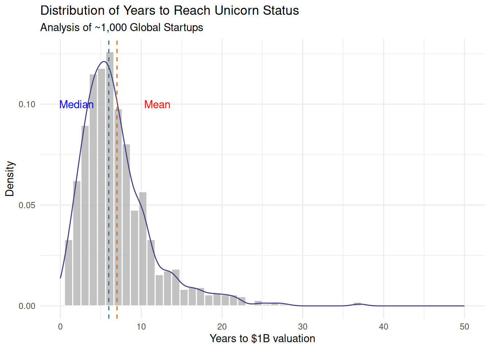
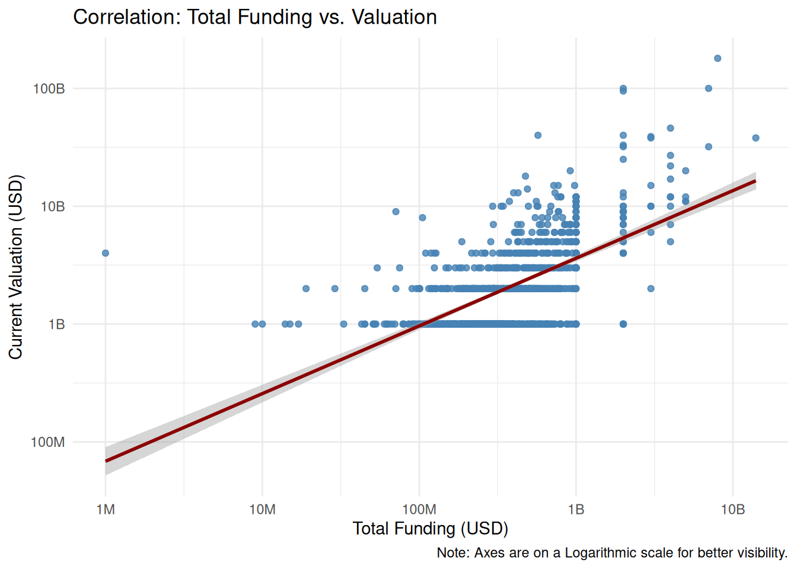
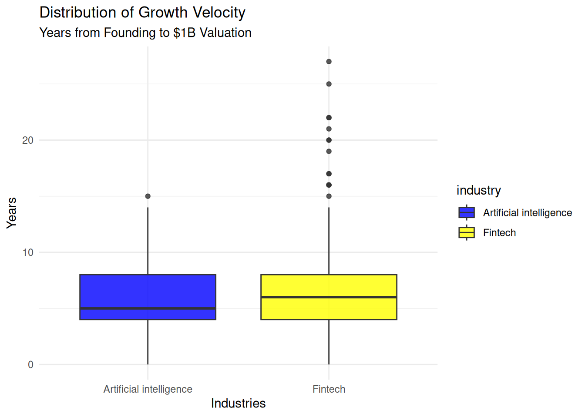
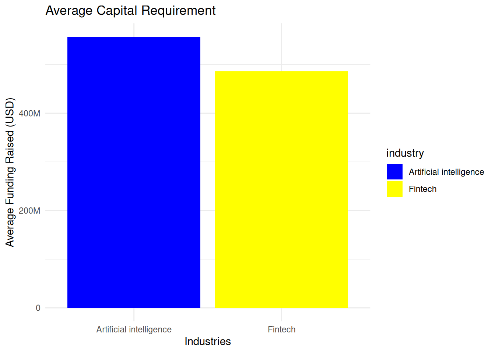

library(tidyverse)
library(scales)
library(knitr)Statistical Case Study: From Data Cleaning to Analysis
Phase 0: Project Planning & Problem Definition
Goal: Align the technical work with the business objectives.
Stakeholder Identification: General Partners at a mid-sized VC firm looking to deploy $500M in emerging markets
Problem Statement: Silicon Valley is saturated and expensive. How can we find untapped geographical hubs that produce high-value, capital-efficient startups in under 5 years?
KPIs:
- Speed to Unicorn: Years from foundation to $1B+
- Capital Efficiency Ratio: Valuation \(\div\) Total Funding.
- Elite Investors: Investors with stakes in the top 10% most efficient startups.
- Market Saturation: Density of unicorns per city/industry.
Data Dictionary: Setting
IndustryandLocationas primary filters,Valuationas the success metric.
Phase 1: Data Engineering & Pre-processing (Excel/R)
Goal: Perform heavy-duty aggregation and multi-dimensional filtering.
Currency Normalization: Used the following Excel formula to convert shorthand ($8B, $200M) into long-form integers:
IF(RIGHT(B2,1)="B", SUBSTITUTE(SUBSTITUTE(B2,"$",""),"B","")*1000000000, IF(RIGHT(B2,1)="M", SUBSTITUTE(SUBSTITUTE(B2,"$",""),"M","")*1000000, SUBSTITUTE(B2,"$","")*1))Date Standardization: Converted all dates into the
YYYY-MM-DDformatData Integrity Check:
Identified and fixed outliers in the date columns where
Year Founded>Date Joinedusing theDATEDIFfunction.Imputed missing values (like the Singapore,Hong Kong and Bahamas city gap).
Data Transformation (Wide to Long): Created another dataset containing only company and investor columns by converting the wide data into long format using the following R script:
# Load the necessary libraries
library(tidyverse)
library(readr)
# Read the data
df <- read_csv("dataset_long_temp.csv")
# Convert from wide to long
df_long <- df %>%
separate_rows(investors, sep = ",") %>%
mutate(investors = str_trim(investors))
# View result
view(df_long)
# Save the file
readr::write_csv(df_long, "dataset_long.csv")- Final Export: Generated two cleaned
.csvfiles to be used in all subsequent tools.
Phase 2: Database Management & SQL Analysis
Goal: Establish the baseline metrics.
Schema Design: Imported the cleaned data into MySQL with appropriate data types.
The “Efficiency” Query: Performed the following SQL query to filter the companies that reached Unicorn status within 5 years:
SELECT company, years_to_unicorn
FROM (
SELECT
company,
YEAR(date_joined) - YEAR(year_founded) AS years_to_unicorn
FROM dataset
GROUP BY company, years_to_unicorn
) AS yu
WHERE years_to_unicorn <= 5
ORDER BY years_to_unicorn;- Geographic Grouping: Performed the following query to find the
Average Valuationper startup per country:
SELECT
country,
avg(valuation) AS average_valuation
FROM dataset
GROUP BY country
ORDER BY average_valuation DESC;- Investor Counting: Wrote the following query to identify which specific investors appear most frequently in the “Top 10%” of the most efficient startups:
WITH enriched AS (
SELECT
company,
investors,
YEAR(date_joined) - YEAR(year_founded) AS years_to_unicorn
FROM dataset_long
WHERE YEAR(date_joined) - YEAR(year_founded) <= 5
),
ranked AS (
SELECT
company,
investors,
years_to_unicorn,
NTILE(10) OVER (ORDER BY years_to_unicorn) AS decile
FROM enriched
)
SELECT
investors,
COUNT(*) AS companies_invested
FROM ranked
WHERE decile = 1
GROUP BY investors
ORDER BY companies_invested DESC;- Top valued industries: Identified industries with the highest company valuations.
SELECT
industry,
SUM(valuation) AS total_valuation
FROM dataset
GROUP BY industry;Phase 3: Statistical Discovery & Advanced EDA (R)
Load the necessary libraries.
Load the CSV file.
Note on Granularity: Company-level metrics are derived solely from the primary dataset (dataset.csv). The long-format dataset (dataset_long.csv) is reserved for investor analysis only, as using it for general statistics would skew valuation and funding totals due to record duplication across multiple investors.
data <- read_csv("dataset.csv")Rows: 1074 Columns: 11
── Column specification ────────────────────────────────────────────────────────
Delimiter: ","
chr (6): company, industry, city, country, continent, investors
dbl (3): company_id, valuation, funding
date (2): year_founded, date_joined
ℹ Use `spec()` to retrieve the full column specification for this data.
ℹ Specify the column types or set `show_col_types = FALSE` to quiet this message.Identify the structure of the dataset.
glimpse(data)Rows: 1,074
Columns: 11
$ company_id <dbl> 10001, 10002, 10003, 10004, 10005, 10006, 10007, 10008, 1…
$ company <chr> "Bytedance", "SpaceX", "SHEIN", "Stripe", "Klarna", "Canv…
$ valuation <dbl> 1.8e+11, 1.0e+11, 1.0e+11, 9.5e+10, 4.6e+10, 4.0e+10, 4.0…
$ year_founded <date> 2012-01-01, 2002-01-01, 2008-01-01, 2010-01-01, 2005-01-…
$ date_joined <date> 2017-04-07, 2012-12-01, 2018-07-03, 2014-01-23, 2011-12-…
$ industry <chr> "Artificial intelligence", "Other", "E-commerce & direct-…
$ city <chr> "Beijing", "Hawthorne", "Shenzhen", "San Francisco", "Sto…
$ country <chr> "China", "United States", "China", "United States", "Swed…
$ continent <chr> "Asia", "North America", "Asia", "North America", "Europe…
$ funding <dbl> 8.00e+09, 7.00e+09, 2.00e+09, 2.00e+09, 4.00e+09, 5.72e+0…
$ investors <chr> "Sequoia Capital China, SIG Asia Investments, Sina Weibo,…With the glipse() functions we can see that all the columns are in the appropritate format.
Calculating Time to Unicorn Status
data <- data |>
mutate(
years_to_unicorn = year(date_joined) - year(year_founded)
)Now lets look at the dataset again
glimpse(data)Rows: 1,074
Columns: 12
$ company_id <dbl> 10001, 10002, 10003, 10004, 10005, 10006, 10007, 1000…
$ company <chr> "Bytedance", "SpaceX", "SHEIN", "Stripe", "Klarna", "…
$ valuation <dbl> 1.8e+11, 1.0e+11, 1.0e+11, 9.5e+10, 4.6e+10, 4.0e+10,…
$ year_founded <date> 2012-01-01, 2002-01-01, 2008-01-01, 2010-01-01, 2005…
$ date_joined <date> 2017-04-07, 2012-12-01, 2018-07-03, 2014-01-23, 2011…
$ industry <chr> "Artificial intelligence", "Other", "E-commerce & dir…
$ city <chr> "Beijing", "Hawthorne", "Shenzhen", "San Francisco", …
$ country <chr> "China", "United States", "China", "United States", "…
$ continent <chr> "Asia", "North America", "Asia", "North America", "Eu…
$ funding <dbl> 8.00e+09, 7.00e+09, 2.00e+09, 2.00e+09, 4.00e+09, 5.7…
$ investors <chr> "Sequoia Capital China, SIG Asia Investments, Sina We…
$ years_to_unicorn <dbl> 5, 10, 10, 4, 6, 6, 7, 2, 2, 6, 3, 27, 3, 10, 6, 9, 6…The years_to_unicorn column has been successfully added to the dataset.
Distribution Analysis
First calculate the mean and median values of the years_to_unicorn column.
mean_val <- mean(data$years_to_unicorn)
median_val <- median(data$years_to_unicorn)print(mean_val)[1] 7.00838print(median_val)[1] 6Visualise the distribution of years_to_unicorn using ggplot2.
ggplot(data, aes(x = years_to_unicorn, y = after_stat(density))) +
geom_histogram(
fill = "grey70",
colour = "white",
bins = 50,
alpha = 0.8
) +
geom_density(
colour = "#404080"
) +
geom_vline(
xintercept = mean_val,
colour = "#D55E00",
linetype = "dashed"
) +
geom_vline(
xintercept = median_val,
colour = "#0072B2",
linetype = "dashed"
) +
annotate(
"text",
x = 12,
y = 0.1,
label = "Mean",
colour = "red",
) +
annotate(
"text",
x = 2,
y = 0.1,
label = "Median",
colour = "blue"
) +
labs(
title = "Distribution of Years to Reach Unicorn Status",
subtitle = "Analysis of ~1,000 Global Startups",
x = "Years to $1B valuation",
y = "Density"
) +
theme_minimal() +
xlim(0,50)
Key Insights:
- The distribution is Right-Skewed (Positive Skew).
- Here the Meadian (6 years) is lower than the Mean (7 Years). This is beacuse a small number of companies took 20+ years to reach “Unicorn” status and pulled the average to the right.
- A peak is noticable near 4-6 years. This is where the most successfull modern startups tend to hit their billion dollar valuation.
Correlation Testing
First calculate the Pearson correlation coefficient between funding and valuation.
pearson_val <- cor(
data$funding,
data$valuation,
use = "complete.obs",
method = "pearson"
)print(pearson_val)[1] 0.5985581Visualise the correlation between valuation and funding.
ggplot(data, aes(x = funding, y = valuation)) +
geom_point(
alpha = 0.8,
colour = "steelblue",
na.rm = TRUE
) +
geom_smooth(
method = "lm",
na.rm = TRUE,
colour = "darkred"
) +
scale_x_log10(
labels = label_number(scale_cut = cut_short_scale())
) +
scale_y_log10(
labels = label_number(scale_cut = cut_short_scale())
) +
labs(
title = "Correlation: Total Funding vs. Valuation",
x = "Total Funding (USD)",
y = "Current Valuation (USD)",
caption = "Note: Axes are on a Logarithmic scale for better visibility."
) +
theme_minimal()
Key Insights:
- The red regression line shows a clear upward slope, confirming a positive correlation between funding and valuation. However, both the axes are on a logarithmic scale, equal steps on the chart represent multiplying not adding (i.e. moving from $100M to $1B is treated the same as moving from $10M to $100M). Therefore the red line means:
When funding increases by a large muliple, valuation also increases by a large multiple.
The vertical distance from the line shows capital efficiency. Above the line means creating more value per dollar; below the line means spending more to get the same result.
With a correlation of ~0.60, funding accounts for about 36% of the variation in valuation (\(R^2 = 0.36\)), meaning the remaining 64% is driven by other factors such as execution, timing, and competitive advantage.
There is a dense cluster of companies around the $1B valuation level, typically with $100M–$1B in total funding. This indicates that, in today’s market, reaching unicorn status usually requires capital within this range.
Industry Deep-Dive:
Created a temporary dataset restricted to the “Artificial Intelligence” and “Fintech” industries to enable focused, side-by-side comparative analysis of valuation and funding characteristics.
comparison_data <- data |>
filter(industry %in% c("Artificial intelligence", "Fintech"))Create a summary statistics table:
comparison_stats <- comparison_data |>
group_by(industry) |>
summarise(
Company_Count = n(),
Avg_Years_to_Unicorn = mean(years_to_unicorn, na.rm = TRUE),
Median_Years_to_Unicorn = median(years_to_unicorn, na.rm = TRUE),
Avg_Funding_USD = mean(funding, na.rm = TRUE),
Median_Funding_USD = median(funding, na.rm = TRUE),
)View the summary table:
kable(
comparison_stats,
caption = "Statistical Profile: AI vs. Fintech"
)| industry | Company_Count | Avg_Years_to_Unicorn | Median_Years_to_Unicorn | Avg_Funding_USD | Median_Funding_USD |
|---|---|---|---|---|---|
| Artificial intelligence | 84 | 5.892857 | 5 | 557166667 | 302500000 |
| Fintech | 224 | 6.544643 | 6 | 486468468 | 370000000 |
Visualisation: Comparing the growth rate
ggplot(comparison_data, aes(x = industry, y = years_to_unicorn, fill = industry)) +
geom_boxplot(alpha = 0.8) +
labs(title = "Distribution of Growth Velocity",
subtitle = "Years from Founding to $1B Valuation",
y = "Years", x = "Industries") +
theme_minimal() +
scale_fill_manual(values = c("blue", "yellow"))
AI companies reach unicorn status in fewer years on average than Fintech companies.
AI has a tighter interquartile range, meaning outcomes are more clustered. However, Fintech shows a wider spread, indicating greater variability in growth timelines.
Fintech has many extreme outliers, with some companies taking 20+ years to reach unicorn status. However, AI has fewer extreme slow-growth cases.
Visualisation: Funding Requirements (Mean Funding)
ggplot(comparison_stats,
aes(x = industry, y = Avg_Funding_USD, fill = industry)) +
geom_col() +
scale_y_continuous(
labels = label_number(scale_cut = cut_short_scale())
) +
labs(
title = "Average Capital Requirement",
y = "Average Funding Raised (USD)",
x = "Industries"
) +
theme_minimal() +
scale_fill_manual(values = c("blue", "yellow"))
- AI unicorns raise roughly $500M+ on average and Fintech unicorns raise closer to $450M. This indicates that, while AI companies may reach unicorn status faster (as shown earlier), they tend to do so with higher upfront capital requirements.
- Fintech is comparatively more capital-efficient at the point of reaching $1B valuation, despite longer and more variable growth timelines.
Key Insights:
AI investing favors larger checks with faster scaling, while Fintech offers lower average capital requirements but longer, less predictable paths to unicorn status.
Closing Statement
This analysis provides a data-driven perspective on the structural realities of startup growth and capital formation. By examining both the distribution of time required to achieve unicorn status and the variation in average funding across industries, the findings highlight meaningful heterogeneity in growth trajectories and capital intensity. The results suggest that success timelines are not uniform and are strongly influenced by sector-specific dynamics, reinforcing the importance of contextual benchmarks when evaluating startup performance.
While the analysis offers valuable descriptive insights, it is limited by the scope and granularity of the available data. Future work could extend this approach by incorporating longitudinal funding rounds, geographic controls, or macroeconomic conditions to better isolate causal relationships. Overall, this phase establishes a solid empirical foundation for deeper inferential or predictive modeling in subsequent stages of the project.